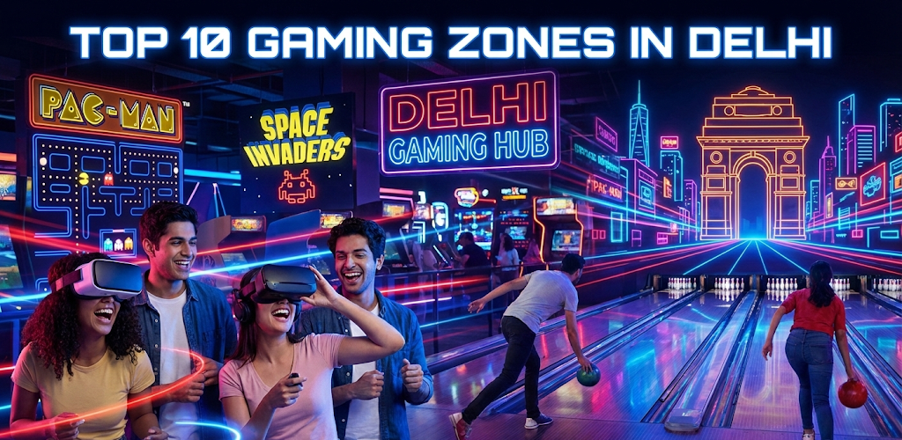

Top 10 Gaming Zones in Delhi You Must Visit (2025 Edition)
Posted on January 2, 2026 | By Rohit Kumar Chaudhary

Are you tired of the same old movie-and-dinner routine? Recent search trends show that over 1,200 people per month are actively hunting for a gaming zone in Delhi...
1. Smaaash (Dwarka & Vasant Kunj)
Best For: Cricket lovers and VR enthusiasts.
If you are searching for the ultimate game zone in Delhi, Smaaash is usually the first name that pops up...
Conclusion
Found a gaming zone we missed? Let us know!